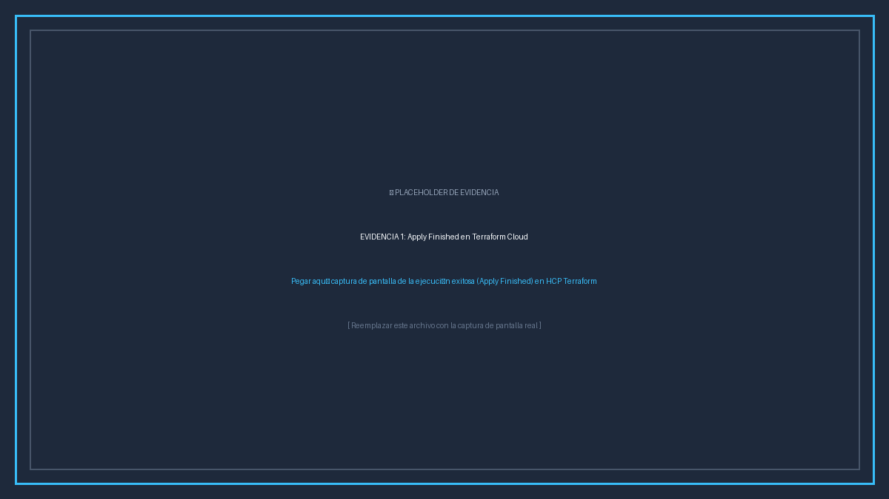
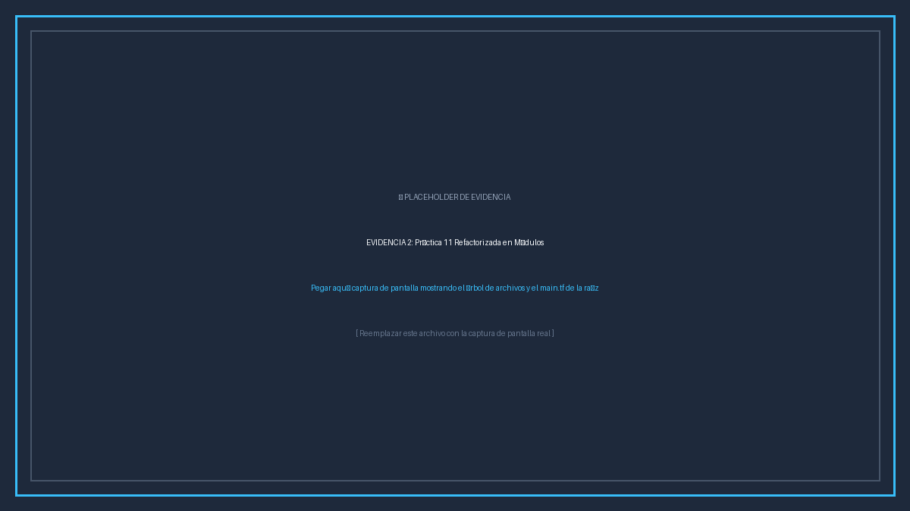
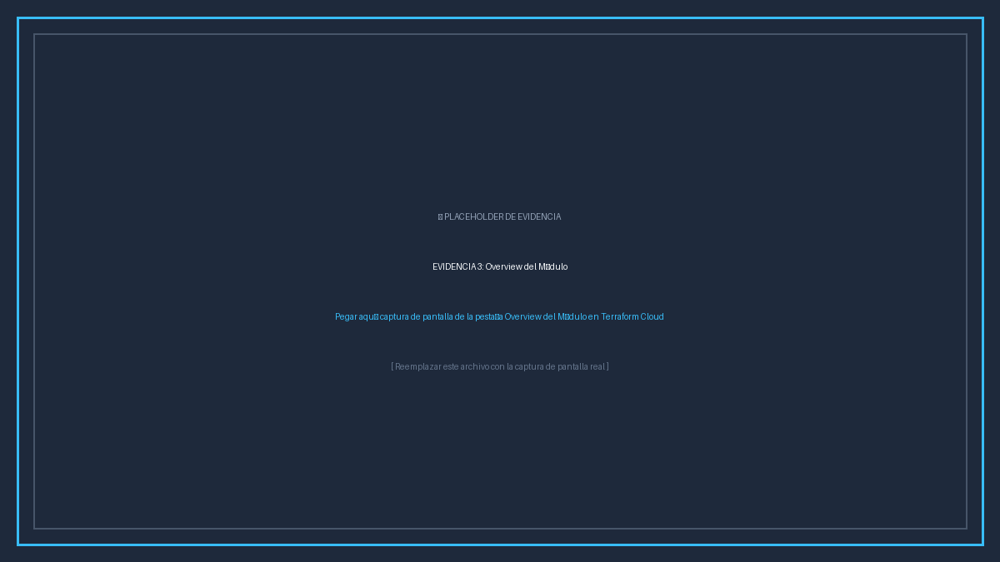

El presente informe documenta la realización de la Tarea 8: Terraform Cloud y Módulos. El propósito de la práctica es implementar un ciclo de vida GitOps moderno para Infraestructura como Código (IaC), utilizando Terraform Cloud (HCP Terraform) como backend remoto de ejecución y GitHub como el repositorio centralizado que dispara despliegues continuos ante eventos de git push.
Como caso de estudio, se tomó la infraestructura desarrollada previamente en la Práctica 11 (cómputo serverless con Cloudflare Workers y base de datos relacional serverless con Cloudflare D1) y se llevó a cabo una refactorización arquitectónica en módulos reutilizables. Esto permite aislar la persistencia en modules/d1 y el procesamiento perimetral en modules/worker, conectándolos a través de variables y salidas en el archivo raíz main.tf.
cypher-27/infra-t8.account_id, api_token como sensible, worker_name y d1_database_name).push al repositorio.
La integración implementada elimina la necesidad de ejecutar comandos manuales en entornos locales. Cuando se confirma un cambio en la rama main de GitHub, un webhook notifica inmediatamente a Terraform Cloud, que inicia de manera desasistida las etapas de Plan y Apply, aplicando los módulos en Cloudflare.
[Desarrollador] ---> git push ---> [GitHub: cypher-27/infra-t8]
|
(VCS Webhook)
v
[Terraform Cloud (HCP)]
/ \
(1. Remote Plan) (2. Remote Apply)
\ /
v v
[Módulo d1: D1 Database] ---> [Módulo worker: Worker + Subdominio]
|
v
https://*.workers.dev (Endpoint)Para maximizar la reusabilidad y mantenibilidad, la arquitectura fue descompuesta en dos módulos independientes:
modules/d1: Módulo responsable exclusivamente de aprovisionar la base de datos cloudflare_d1_database. Expone el database_id necesario para el enlace.modules/worker: Módulo responsable de compilar la función serverless (worker.js), inyectar el binding nativo DB con el database_id y habilitar el subdominio público en *.workers.dev.main.tf)provider "cloudflare" {
api_token = var.api_token
}
# MÓDULO 1: Base de Datos Relacional Serverless
module "d1" {
source = "./modules/d1"
account_id = var.account_id
database_name = var.d1_database_name
}
# MÓDULO 2: Cómputo en el Edge y Subdominio
module "worker" {
source = "./modules/worker"
account_id = var.account_id
worker_name = var.worker_name
d1_database_id = module.d1.database_id
azure_api_url = var.azure_api_url
}
En la consola web de Terraform Cloud se creó el workspace infra-t8 vinculado al repositorio cypher-27/infra-t8 en la rama main. Las variables de ejecución se definieron protegiendo los secretos:
| Nombre de Variable | Categoría | Sensible | Propósito |
|---|---|---|---|
account_id |
Terraform | No | Identificador de la cuenta de Cloudflare (32 caracteres hexadecimales) |
api_token |
Terraform | Sí (Sensitive) | Token de API con permisos de Workers Scripts y Cloudflare D1 |
worker_name |
Terraform | No | Nombre asignado al Worker (tarea8-worker) |
d1_database_name |
Terraform | No | Nombre de la base de datos relacional (tarea8-db) |
Captura de pantalla de la ejecución remota en Terraform Cloud con estado Apply Finished, evidenciando el aprovisionamiento exitoso de los recursos y la generación de los Outputs.

Captura de pantalla del entorno de desarrollo mostrando el árbol de archivos con los módulos d1 y worker, junto con el archivo main.tf de la raíz que los orquesta.

Captura de pantalla mostrando la vista Overview del módulo en Terraform Cloud (a nivel Workspace o en el Private Module Registry), detallando sus inputs, outputs, dependencias y documentación.

Tras el despliegue automático en Terraform Cloud, se verificó el endpoint público expuesto en *.workers.dev mediante curl:
$ curl -s https://tarea8-worker.cyphernexon27-home.workers.dev
{
"ok": true,
"mensaje": "Despliegue automatizado exitoso mediante Terraform Cloud y Módulos Reutilizables",
"materia": "Infraestructura y Desarrollo Continuo - ITESO",
"tarea": "Tarea 8 - Terraform Cloud",
"arquitectura": {
"plataforma": "Cloudflare Edge Workers + D1 Database",
"orquestador": "Terraform Cloud (HCP Terraform)",
"vcs_ci_cd": "GitHub Push Event Trigger",
"modulos": ["modules/d1", "modules/worker"]
},
"cloudflare_d1": {
"estado": "Conectado y persistiendo en SQLite",
"visitas_totales": 1
},
"request": {
"url": "https://tarea8-worker.cyphernexon27-home.workers.dev/",
"timestamp": "2026-11-07T17:45:00.000Z"
}
}
El incremento progresivo de visitas_totales confirma la operatividad del enlace (binding) DB gestionado modularmente hacia la base de datos D1.
La realización de esta práctica consolidó los dos pilares fundamentales del escalamiento en Infraestructura como Código: la modularización y la adopción del paradigma GitOps. Al modularizar la Práctica 11, se redujo la complejidad cognitiva del código, habilitando componentes limpios, reutilizables y comprobables. Asimismo, la delegación del ciclo de vida a Terraform Cloud garantiza un estado remoto seguro, evita ejecuciones concurrentes conflictivas mediante bloqueo automático de estado y ofrece trazabilidad integral de cada despliegue asociado a un commit en GitHub.